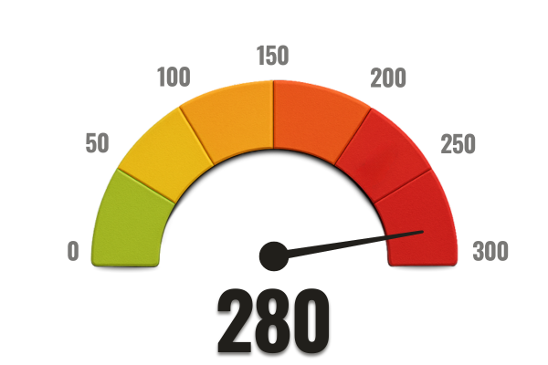

How old are you?
- Under 30
- 30–39
- 40–49
- 50–59
- 60 or older
Privacy Notice: All responses are 100% anonymous and confidential.
Do you hear sounds like ringing, buzzing, or pulsing in your ears?
- Yes, constantly
- Yes, sometimes
- I used to, but it went away
- No, never
Privacy Notice: All responses are 100% anonymous and confidential.
You’re not alone...
You might think you’re the only one... but the truth is, millions of people suffer from this invisible sound. Tinnitus silently affects your social life, sleep, and even your mental health.
You are not alone — and most importantly: there is a solution.
How long have you been dealing with these sounds?
- Less than 1 month
- 1 to 6 months
- 6 months to 1 year
- More than 1 year
Privacy Notice: All responses are 100% anonymous and confidential.
Does this sound affect your sleep or ability to concentrate?
- Yes, it disrupts me a lot
- Yes, it bothers me a little
- No, it doesn’t interfere
- I’m not sure
Privacy Notice: All responses are 100% anonymous and confidential.
The cause might be in your medications
For a long time, tinnitus was believed to be just a natural consequence of aging.
But recent studies show it may be linked to long-term use of certain common medications.
Science has already identified a silent villain.
Privacy Notice: Your answers are 100% anonymous and confidential.
Do you take medications regularly?
- Yes, every day
- Yes, occasionally
- Rarely
- Never
Privacy Notice: Your answers are 100% anonymous and confidential.
Have you taken antibiotics, aspirin, or allergy medications in the past few months?
- Yes
- No
- I don't remember
Privacy Notice: Your answers are 100% anonymous and confidential.
Do you experience dizziness, headaches, or constant stress?
- Yes, frequently
- Yes, sometimes
- Rarely
- Never
Privacy Notice: Your answers are 100% anonymous and confidential.
Silent Toxins: the invisible cause behind tinnitus
Few people know this, but many common medications — like antibiotics, aspirin, and allergy pills — contain ototoxic substances.
These toxins build up silently and progressively: they accumulate in the inner ear, inflame the tissues, and stiffen the eardrum, preventing normal sound capture.
Over time, the body stops perceiving subtle frequencies, and the brain tries to compensate... creating internal noises like ringing and buzzing.
"I thought I was going crazy... but I discovered the problem was inside my body: toxins." — Carlos F., 58
Privacy Notice: Your answers are 100% anonymous and confidential.
Have you had a hearing test in the past few years?
- Yes, recently
- Yes, a while ago
- No, never
Privacy Notice: All responses are 100% anonymous and confidential.
Has a doctor ever told you there's nothing physically wrong with your ears?
- Yes, more than one
- Yes, just one
- No, they always found something
- Never went to a doctor
Privacy Notice: All responses are 100% anonymous and confidential.
How has this affected your personal or family life?
- It pushed me away from people
- I feel embarrassed asking people to repeat things
- My quality of life has decreased
- It hasn’t affected me much
Privacy Notice: All responses are 100% anonymous and confidential.
Have you tried hearing aids, sound therapy, medications, or natural solutions?
- Yes, several of them
- Yes, but with no results
- Thought about it, but didn’t try
- No, never tried
Privacy Notice: All responses are 100% anonymous and confidential.
How do you feel about trying everything with no lasting results?
- Tired and frustrated
- I still have hope
- I’ve lost faith in solutions
- I’ve never looked for solutions
Privacy Notice: All responses are 100% anonymous and confidential.
Have you noticed memory or concentration difficulties lately?
- Yes, I frequently have memory lapses
- I feel like my thinking is slower
- A little, but it could be fatigue
- I haven’t noticed anything different
Privacy Notice: Your responses to this questionnaire are 100% anonymous and confidential.
DID YOU KNOW?
The root of the problem may be inside you
Behind many cases of ringing and hearing loss, there’s a silent enemy: toxins accumulated in the inner ear.
These substances, often found in common medications, inflame tissues and slowly damage the eardrum.
Conventional medicine often overlooks this. But natural science has begun to uncover the truth behind this invisible threat.
"That’s when a natural discovery began to change everything..."
Scientific Discovery
A plant overlooked for decades might hold the key
Researchers in natural health, backed by institutions such as Harvard, Stanford, and Johns Hopkins Institute in the U.S., made a surprising discovery:

An ancient plant called moringa has shown strong potential to neutralize ototoxic toxins that silently build up in the human ear.
Recent studies show its active compounds target microscopic inflammation in the auditory system, helping restore eardrum flexibility and protecting the brain from sensory overload damage.
"This might be the natural key to breaking the cycle of auditory intoxication and restoring hearing."
Were you already aware of moringa’s benefits for hearing and brain health?
- Yes, I was
- I’ve heard of it
- No, it’s new to me
Privacy Notice: Your responses to this questionnaire are 100% anonymous and confidential.
What makes moringa so powerful for your ears?
Moringa acts as a powerful natural antioxidant and anti-inflammatory. In the auditory system, it:
Discover the Vitamax Protocol
Based on these discoveries, we created the Vitamax Protocol:
It only takes 2 minutes a day to start your transformation.
Would you be willing to spend 2 minutes a day to improve your hearing?
- Yes, definitely
- Maybe, depending on what it is
- I'm not sure
- No, I’m skeptical
Privacy Notice: Your responses are 100% anonymous and confidential.
What are people saying?
Analyzing your answers...
Generating your personalized hearing restoration plan...HEARING DIAGNOSIS: TOXIN LEVEL
Based on your answers, we've identified a critical level of ototoxic toxin buildup in your auditory system.
⚠️ Safe level of auditory toxins: up to 80 points
❌ Your current level: 280 points
This is more than 3 times the safe limit for the human ear. These are not just numbers — they represent real damage that is already affecting your hearing health.
Ototoxic Intoxication
Your exposure to ototoxic substances from medications is high. These toxins inflame the inner ear and stiffen the eardrum, drastically impairing your ability to hear clearly.
Eardrum Flexibility
You reported symptoms like ringing, buzzing, and progressive hearing loss. This suggests your eardrum has lost its natural elasticity, causing distorted or muffled sounds.
Neurological Stress
The stress caused by constant noise puts your brain in a constant state of alert. This can lead to insomnia, anxiety, irritability, memory issues, and trouble concentrating.
Auditory Defenses
Your auditory immune system is compromised. Instead of fighting off toxins, it's worsening inflammation, accelerating hearing loss, and intensifying constant ringing.
FINAL ANALYSIS:
Your ears are under constant invisible attacks. This diagnosis points to advanced intoxication, chronic inflammation, and a real risk of permanent hearing loss.
The ringing you're hearing is just the tip of the iceberg — a sign that internal damage is already advanced.
If you don’t act now, the risk of permanent hearing loss, mental fog, and worsening symptoms will only increase.
But the good news is, you're still in time to reverse this — and that starts with the next step.
RESTORE YOURHEARING NOW